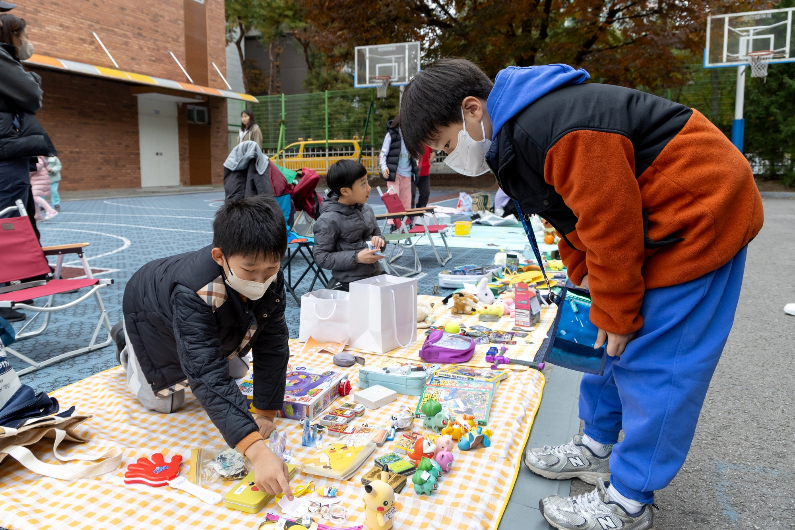

마포구, 9~10월 동별 마을축제 릴레이 개최…주민참여예산 활용
합정·대흥·도화 등 9월부터 동 곳곳 가을 주민잔치

[시사포커스 / 김재록 기자] 마포구(구청장 유동균)는 주민이 직접 기획하고 주관하는 다양한 동 단위 마을축제를 9월부터 연이어 개최한다. 마포구청에 따르면 이번 마을축제는 주민참여예산을 활용해 주민 주도의 지역 공동체 화합을 도모한다는 점에서 의미가 깊다. 첫 포문은 합정동이 연다. 합정동 축제추진위원회는 오는 9월 12일 오전 10시 30분부터 마포새빛문화숲 잔디광장에서 ‘제7회 합정동 꿈의 축제’를 개최한다. 무대존에서는 자치회관 프로그램 발표회와 주민 노래자랑, ‘합정! 골든벨을 울려라’ 등이 펼쳐지며, 체험존에는 에어바운스 놀이터·페이스페인팅, 먹거리 장터와 찾아가는 복지상담 부스도 운영된다.
9월 19일에는 대흥동주민센터 광장에서 ‘제8회 대흥이네 마을축제’와 도화동 복사꽃어린이공원 일대에서 ‘제4회 복사골 도화동 한마음 축제’가 동시에 열린다. 특히 대흥동 축제에서는 ‘AI 캐리커쳐’, ‘AI 피부진단’ 등 최신 트렌드를 반영한 체험 프로그램이 운영돼 이색적인 경험을 선사할 예정이다. 유동균 마포구청장은 “주민이 직접 준비하고 함께 만들어가는 마을축제는 이웃과 지역을 더욱 가깝게 잇는 힘이 있다”며 “주민 모두가 축제의 주인공이 되어 소통하고 화합하는 시간이 되길 바라며, 마포구도 활기찬 마을공동체를 만들어가는 데 힘을 보태겠다”고 말했다.
축제는 추석 연휴 이후 10월에도 이어진다. 공덕동 ‘제8회 공덕동 알콩달콩마실축제’, 아현동 ‘제3회 아현 살구꽃 어울림 음악 축제’, 용강동 ‘제4회 용강동 마을축제 토정아 놀자!’, 염리동 ‘2026 염리동 소금축제’, 신수동 ‘제14회 신수철리마을장터 축제’, 서강동 ‘서강동 온마을이 축제다!’, 서교동 ‘제9회 잔다리마을문화축제’, 망원1동 ‘제6회 망원경 축제’, 연남동 ‘2026년 연남동 주민화합대축제’, 성산1동 ‘제4회 성산1동 단풍숲길 축제’, 성산2동 ‘제19회 성메간데마을 행복나눔 축제’ 등 마포구 전역에서 다채로운 마을 잔치가 펼쳐질 예정이다.